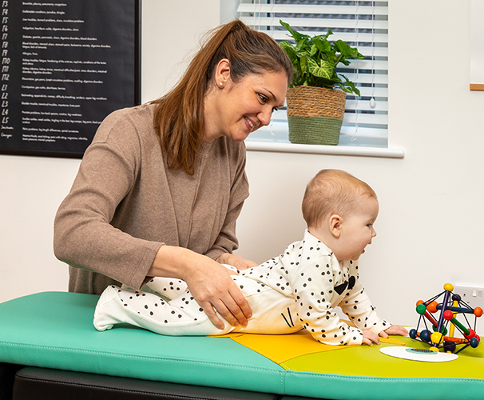

This Is Me
I’m a Yorkshire lass who grew up on a farm but moved to the big city, where I discovered my love for family care. Now, I’m back in the countryside with my husband, our two children, a few chickens, and lots of homegrown veggies. I believe in balance: eat well, think well and move well. I'm at my happiest hiking up mountains, travelling in our campervan Bruce, or enjoying coffee and cake with friends. But snuggling with my kids is, without a doubt, the highlight of my day.
My goal is to empower, support, and inspire you to reach your health goals. This space reflects not just what I do—but who I am.
I honestly think I have the best job in the world. What could be better than helping people reach their health goals, watching parents welcome their newborns, and adjusting multiple generations in the same family? I first discovered chiropractic when I was in secondary school, and after shadowing an incredible chiropractor, I just knew, it was exactly what I wanted to do.
Since graduating in 2008 and moving from Yorkshire to London to start my career, I’ve spent over 17 years in a family-focused clinic, supporting people through every stage of life. I’ve seen babies grow into confident teens, and even witnessed some of those teens go on to become chiropractors themselves. It’s a privilege I’ll never take for granted.
Opening Thrive was a dream that slowly took shape through years of learning, growth, and motherhood. I wanted to create a space that felt like home.
- Somewhere calm and welcoming.
- Designed around the real lives of the families I care for.
- Where care feels personal and the connection is real.
As a mum of two, I understand the chaos and beauty of family life, and it’s why I’ve considered every detail—like online booking during a 3am feed, toys and space for little ones to play, and parking that actually makes life easier.
My ambition for Thrive has always been for it to be more than just a clinic. I’ve created a welcoming space rooted in care, connection, and true community—and I hope you feel that the moment you walk through the door.
"Supporting you and your family to feel well, function well and THRIVE, naturally"
Family First
Family care is my passion, and the heart behind this studio. My own journey through pregnancy, birth, and motherhood opened my eyes to how much support families truly need—physically, emotionally, and practically. It’s what inspired me to create a space where mums feel heard, babies are cherished, and families feel truly supported through every stage of the journey.
Gentle, Informed Care for Life’s Most Important Chapters
Pregnancy, birth, and those early months with a new baby are filled with change—physically, emotionally, and mentally. My own experience of home birth, C-section, VBAC, and breastfeeding challenges has given me a deep empathy and understanding for what this time can bring. I’ve been there, and it’s why I’m so passionate about supporting other mums on their path.
From helping expectant mothers manage pelvic pain to checking newborns after birth, I offer gentle, informed care designed to meet the needs of both mum and baby. Whether you’re preparing for pregnancy, navigating the fourth trimester, or simply trying to find your feet again—I’m here for you, with safe hands, a listening ear, and a space where you feel truly seen.
Chiropractic care during pregnancy and the postnatal period should be both effective and nurturing. With years of hands-on experience and training in family care, I have developed a gentle, confident approach tailored to the unique needs of both mums and babies—offering strength where it’s needed and softness where it matters most.
- " Treatment strong enough for mum but gentle enough for baby "
What Makes Thrive
This is a glimpse into the heart of the work you don’t always see. The learning, the lived experience, and the community outreach that shape who I am and how I care for every person who walks through the door.
Continued learning
I love to learn and you will always find me attending seminars to refine my skills and knowledge. Whether it's perfecting my adjustment techniques or expanding my knowledge in pregnancy and postpartum care. I believe that ongoing education is key to providing the best care and support to those I serve. I am committed to staying up-to-date with the latest research and methods to ensure that I can offer the highest standard of care to my patients.
Family
My children are my greatest teachers, and having been pregnant and having two completely different types of births, this has equipped me with a heightened empathy and a deeper knowledge of the bodies needs. I am more committed than ever to supporting the body’s innate ability to heal and function optimally, providing relief and comfort with a gentle, caring touch that honours the unique needs of each individual on their health journey.
Health talks
I offer informative and engaging health talks and screenings that educate you on the vital aspects of your health, from posture and spinal health to lifestyle and wellness tips for pregnancy and postpartum. These talks and screenings are a great opportunity to catch potential issues early and allow you to stay proactive in your health journey. I’m also honoured to speak at professional events like the Women in Chiropractic conference.
Chiropractic For The Whole Family
Starting with pregnancy, through to newborns, parents and even grandparents. I love supporting every member of the family on their wellness journey! Don’t wait—book your appointment now and start feeling your best together.
Book NowFeel Better, Move Freely
Chiropractic care can help relieve common issues and improve your body’s function—naturally and gently, for every stage of life.
I commonly support people with;
Ready to Feel Your Best?
Whether you're looking for gentle support through pregnancy, relief from daily aches, or care for your growing kids—Thrive is here for you. With flexible scheduling and a family-friendly approach, we’ve made booking simple and stress-free.
Book Now